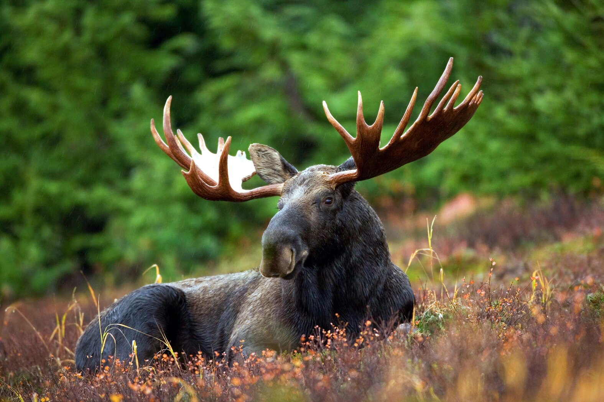

The Strange Wonders of the Cactus, the Plant of Our Times
Cactuses are spiky and rough; foreboding and strange; gnarled, Seussian, and sometimes toxic. They evoke places where people can’t survive. But when removed from those places—their native habitats—individually potted, and sold as decoration for a house, a garden, or an office, they are among the easiest plants a person can have, requiring little or no care and still looking good.
Moose
Moose are similarly nimble on land. They can run up to 35 miles an hour over short distances, and trot steadily at 20 miles an hour.Moose are the largest of all the deer species. Males are immediately recognizable by their huge antlers, which can spread 6 feet from end to end. Moose have long faces and muzzles that dangle over their chins. A flap of skin known as a bell sways beneath each moose's throat.

The Secret Lives of Horses
No one knows who created this miniature marvel, dubbed the “Vogelherd horse” after the cave in Germany in which it was found, but it is clear that this ivory carver spent a lot of time watching wild horses, studying their social interactions and learning their body language.
Northern Lights: More than just a pretty light show

What we know is that auroral activity coincides with sunspots – darker, cooler regions of intense magnetic activity on the Sun’s surface. Birkeland said that currents flowing through the gas of the upper atmosphere caused the light show; in the same way that our modern-day neon lights work.
The night sky magic of the Atacama

There are few places left in the world to see the sky as our ancestors did; to gaze in wonder at the celestial dome and feel the weight of billions of years of cosmic history hanging above us. Thankfully the International Dark Sky Association is working to preserve what's left of the true night sky, and they've rightfully marked northern Chile to preserve for posterity.
Strawberry, delicacy with close relatives in Nordic nature
The strawberry (Fragaria sp.) is one of the most popular berries on Nordic tables. The wild strawberries have been harvested in the wild and highly appreciated for centuries, not only for the sweet taste, but as a cure for illnesses.
Is there snow in that tree?

Researchers want to predict how much water we will get later in the year based on the snowpack. But in forested regions, the trees impact the calculations. When falling snow is intercepted by trees, it sometimes never makes its way to the ground, and the current models struggle to predict what will happen.

Collective payments for ecosystem services: a promising policy tool to reduce deforestation?
Payments for Ecosystem Services (PES) programmes are often used as a tool to reduce deforestation and forest degradation in tropical countries.Such programmes offer monetary or in-kind payments to individual landowners or forest users who voluntarily reduce deforestation or increase their forest-conservation activities, thereby, increasing the forest’s ecosystem services.